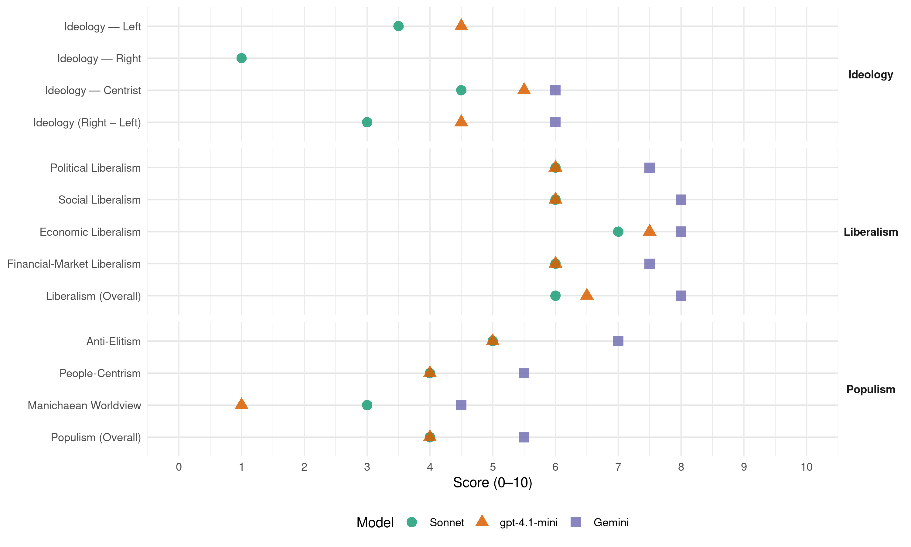

URS (Serbia, 2012)
manifesto_id 95451_201205
Get full text: This site shows derived annotations and short verbatim quotes only. The full manifesto text is © Manifesto Project / WZB — obtain it via manifesto-project.wzb.eu using the manifesto_id above.
Headline scores
| Dimension | Sonnet | gpt-4.1-mini | Gemini |
|---|---|---|---|
| Populism (Overall) | 4.0 | 4.0 | 5.5 |
| Anti-Elitism | 5.0 | 5.0 | 7.0 |
| People-Centrism | 4.0 | 4.0 | 5.5 |
| Manichaean Worldview | 3.0 | 1.0 | 4.5 |
| Ideology (Right − Left) | 3.0 | 4.5 | 6.0 |
| Liberalism (Overall) | 6.0 | 6.5 | 8.0 |
| Political Liberalism | 6.0 | 6.0 | 7.5 |
| Social Liberalism | 6.0 | 6.0 | 8.0 |
| Economic Liberalism | 7.0 | 7.5 | 8.0 |
| Financial-Market Liberalism | 6.0 | 6.0 | 7.5 |
Evidence per dimension
Economic Liberalism
Gemini · score 8.0 · verified · chunk 1
“Сва предузећа морају имати једнаке услове пословања на тржишту”
Обезбедити једнаке услове пословања за све Сва предузећа морају имати једнаке услове пословања на тржишту. Зато је потребно спровести ригорозну контролу
Gemini · score 8.0 · verified · chunk 2
“izgradnju tržišta poljoprivrednog zemljišta”
ponovno uspostavljanje. Izgraditi tržište poljoprivrednog zemljišta Restitucijom vratiti poljoprivredno zemljište starim
gpt-4.1-mini · score 8.0 · verified · chunk 1
“Пореска реформа у Србији зато мора почети увођењем реда у јавне финансије и укидањем бројних парафискалних намета”
…Пореска реформа у Србији зато мора почети увођењем реда у јавне финансије и укидањем бројних парафискалних намета. Бројне таксе и накнаде су неоправдане и њих треба потпуно укинути. Преостале треба значајно смањити…
gpt-4.1-mini · score 7.0 · verified · chunk 2
“Povećati konkurentnost kroz investicije u opremu i znanje, Subvencije koje nemaju ekonomski efekat treba ukinuti (odmah ili postepeno)”
…Podrška poljoprivredi biće zasnovana na sledećim principima: Povećati konkurentnost kroz investicije u opremu i znanje, Subvencije koje nemaju ekonomski efekat treba ukinuti (odmah ili postepeno), Razdvojiti ekonomske i socijalne mere. Osnovni pravci subvencionisanja biće usmereni ka: Podršci ruralnom razvoju i investicijama…
Sonnet · score 7.0 · verified · chunk 1
“Укидање бројних парафискалних намета”
Пореска реформа и подршка малим и средњим предузећима. Укидање бројних парафискалних намета. У Србији данас постоји чак 258 парафискалних намета.
Sonnet · score 7.0 · verified · chunk 2
“Povećati konkurentnost kroz investicije”
Podrška poljoprivredi biće zasnovana na sledećim principima: Ǯ Povećati konkurentnost kroz investicije u opremu i znanje
Financial-Market Liberalism
Gemini · score 7.0 · verified · chunk 1
“јаке комерцијалне банке окосница финансијског система”
Подразумева се да су јаке комерцијалне банке окосница финансијског система, али привредни развој у неразвијеним подручјима није могућ
Gemini · score 8.0 · verified · chunk 2
“postojanje konkurencije među bankama”
kreditranje poljoprivrednika. Osnovni pokretač razvoja bilo je postojanje konkurencije među bankama i to što se u programima subvencionisanja
gpt-4.1-mini · score 7.0 · verified · chunk 1
“Србија треба трајно да задржи већинско власништво у Комерцијалној банци”
…У доба кризе, показало се колики је значај јаких банака за укупан привредни систем… Србија треба трајно да задржи већинско власништво у Комерцијалној банци, а кроз процес докапитализације и припајања да оснажи Поштанску штедионицу и Агробанку…
gpt-4.1-mini · score 5.0 · verified · chunk 2
“Nastaviti programe subvencionisanih kredita po modelu koji je postojao u periodu 2004-2006. godine Razvijati konkurenciju međubankama”
…Bez razvijenog tržišta kredita nema uspešne poljoprivrede Nastaviti programe subvencionisanih kredita po modelu koji je postojao u periodu 2004-2006. godine Razvijati konkurenciju međubankama Godine 2004. započet je program podrške kreditima u poljoprivredi, jer je G 17 PLUS znao da bez razvijenog tržišta ruralnog finansiranja ne može da bude ni razvijene poljoprivrede…
Sonnet · score 5.0 · mixed · chunk 1
“Србија треба трајно да задржи већинско власништво у Комерцијалној банци”
У доба кризе, показало се колики је значај јаких банака… Због тога, Србија треба трајно да задржи већинско власништво у Комерцијалној банци.
Sonnet · score 6.0 · verified · chunk 2
“konkurenciju među bankama”
Osnovni pokretač razvoja bilo je postojanje konkurencije među bankama i to što se u programima subvencionisanja uvek insistiralo na konkurenciji, umesto favorizovanja jedne ili dve banke.
Political Liberalism
Gemini · score 8.0 · verified · chunk 1
“Судство мора у много већој мери да буде независно”
Пресудну улогу у стварању једнаких услова за све на тржишту имаће реформа правосуђа. Судство мора у много већој мери да буде независно.
Gemini · score 7.0 · verified · chunk 2
“Sprovoditi Zakon o poljoprivrednom zemljištu”
vratiti poljoprivredno zemljište starim vlasnicima Sprovoditi Zakon o poljoprivrednom zemljištu na valjan način Započeti proces prodaje
gpt-4.1-mini · score 7.0 · verified · chunk 1
“Влада треба да врши искључиво контролну функцију”
…Партије треба де се повуку из управљања јавним предузећима, а уместо њих треба да их воде професионални менаџери… Влада треба да врши искључиво контролну функцију. Управни одбори се морају укинути…
gpt-4.1-mini · score 5.0 · verified · chunk 2
“Poljoprivreda može značajno više da doprinese ukupnom ekonomskom razvoju, ali u nju treba mnogo više i ulagati”
…Ali, poljoprivreda je jako važna jer ona može da obezbedi stabilnost cena (a ne kao sada kada imamo veliku varijabilnost cena), može da obezbedi pristojan prihod značajnom delu stanovnika u ruralnim sredinama (ali ne svima onima koji se danas njome bave) i može da bude kratkoročni pufer za tranzicione procese (ali ne ako tranzicija traje suviše dugo). Generalno, ona može značajno da doprinese ukupnom bogatstvu Srbije, ali samo ukoliko u nju više ulažemo i to na pametan način…
Sonnet · score 6.0 · verified · chunk 1
“Судство мора у много већој мери да буде независно”
Пресудну улогу у стварањуједнаких услова за све на тржишту имаће реформа правосуђа. Судство мора у много већој мери да буде независно.
Sonnet · score 6.0 · verified · chunk 2
“transparentnim i kvantifikovanim kriterijumima”
Odabir bi trebalo da bude zasnovan na transparentnim i kvantifikovanim kriterijumima
Liberalism (Overall)
Gemini · score 8.0 · verified · chunk 1
“Сва предузећа морају имати једнаке услове пословања на тржишту”
Обезбедити једнаке услове пословања за све Сва предузећа морају имати једнаке услове пословања на тржишту. Зато је потребно спровести ригорозну контролу
Gemini · score 8.0 · verified · chunk 2
“izgradnju tržišta poljoprivrednog zemljišta”
ponovno uspostavljanje. Izgraditi tržište poljoprivrednog zemljišta Restitucijom vratiti poljoprivredno zemljište starim
gpt-4.1-mini · score 7.0 · verified · chunk 1
“Пореска реформа у Србији зато мора почети увођењем реда у јавне финансије и укидањем бројних парафискалних намета”
…Пореска реформа у Србији зато мора почети увођењем реда у јавне финансије и укидањем бројних парафискалних намета. Бројне таксе и накнаде су неоправдане и њих треба потпуно укинути. Преостале треба значајно смањити…
gpt-4.1-mini · score 6.0 · verified · chunk 2
“Povećati konkurentnost kroz investicije u opremu i znanje, Subvencije koje nemaju ekonomski efekat treba ukinuti (odmah ili postepeno)”
…Podrška poljoprivredi biće zasnovana na sledećim principima: Povećati konkurentnost kroz investicije u opremu i znanje, Subvencije koje nemaju ekonomski efekat treba ukinuti (odmah ili postepeno), Razdvojiti ekonomske i socijalne mere. Osnovni pravci subvencionisanja biće usmereni ka: Podršci ruralnom razvoju i investicijama…
Sonnet · score 6.0 · verified · chunk 1
“Укидање бројних парафискалних намета”
Пореска реформа и подршка малим и средњим предузећима. Укидање бројних парафискалних намета. У Србији данас постоји чак 258 парафискалних намета.
Sonnet · score 6.0 · verified · chunk 2
“otvorenost tržišta, poštovanje ugovora”
eliminisati barijere za investiranje koje se tiču ukupne poslovne klime… kao što su stabilizacija cena, otvorenost tržišta, poštovanje ugovora male vrednosti
Anti-Elitism
Gemini · score 8.0 · verified · chunk 1
“у пракси имамо окорелу партократију”
стари партократију систем не само да није замењен, него је и додатно ојачао. Уместо демократије, данас у пракси имамо окорелу партократију, која у овом тренутку доживљава свој врхунац
Gemini · score 6.0 · verified · chunk 2
“predstavljaju savršeni mehanizam za korupciju”
ne postoji volja da se sprovode. Tako oni predstavljaju savršeni mehanizam za korupciju. Rad Ministarstva u poslednje tri godine
gpt-4.1-mini · score 7.0 · verified · chunk 1
“Влада не слуша глас привреде. Премијер и министар финансија седе скрштених руку.”
…Превише људи је без посла. Буџетски дефицит је већи од 5 одсто бруто домаћег производа, а јавни дуг близу 50 одсто БДП. И поред тога, бирократија се непрекидно гомила. Влада не слуша глас привреде. Премијер и министар финансија седе скрштених руку. Гувернер не разговара са банкарима…
gpt-4.1-mini · score 3.0 · verified · chunk 2
“Novi program za poljoprivredu: Udvostručiti ulaganja Agrarni budžet mora da bude u skladu sa očekivanjima koje društvo ima od poljoprivrede.”
…poljoprivrednika. Novi program za poljoprivredu: Udvostručiti ulaganja Agrarni budžet mora da bude u skladu sa očekivanjima koje društvo ima od poljoprivrede. U najmanju ruku, agrarni budžet mora da bude udvostručen, tj. vraćen na nivo od pre pet godina (5% ukupnog budžeta). Hrana sve više dobija na značaju, posebno u uslovima sadašnje globalne ekonomske krize, zbog čega ulaganje u poljoprivredu predstavlja veoma sigurnu investiciju…
Sonnet · score 6.0 · verified · chunk 1
“Влада не слуша глас привреде”
Превише људи је без посла. Буџетски дефицит је већи од 5 одсто… Влада не слуша глас привреде. Премијер и министар финансија седе скрштених руку.
Sonnet · score 4.0 · verified · chunk 2
“korupciju. Rad Ministarstva u poslednje tri godine”
jer su ili nesprovodljivi ili ne postoji volja da se sprovode. Tako oni predstavljaju savršeni mehanizam za korupciju. Rad Ministarstva u poslednje tri godine biće zapamćen po zakonima sa odloženim dejstvom
Ideology — Centrist
Gemini · score 7.0 · verified · chunk 1
“партијске монополе над јавним предузећима”
кроз промену Закона о јавним предузећима треба системски разбити партијске монополе над јавним предузећима и професионализовати њихов рад.
Gemini · score 5.0 · verified · chunk 2
“obmana javnosti i poljoprivrednika”
Nacionalni progam za poljoprivredu, samo su obmana javnosti i poljoprivrednika. Novi program za poljoprivredu: Udvostručiti
gpt-4.1-mini · score 7.0 · verified · chunk 1
“Уједињени региони Србије имају јасан план и људе који су на делу показали да могу да покрену регионе и српску економију.”
…Инспекције су за вратом онима који легално раде, а оне који раде на црно, готово да нико не контролише. Уједињени региони Србије имају јасан план и људе који су на делу показали да могу да покрену регионе и српску економију. Показали смо да смо у стању да привучемо велике стране инвеститоре…
gpt-4.1-mini · score 4.0 · verified · chunk 2
“Poljoprivreda može značajno više da doprinese ukupnom ekonomskom razvoju, ali u nju treba mnogo više i ulagati”
…Ali, poljoprivreda je jako važna jer ona može da obezbedi stabilnost cena (a ne kao sada kada imamo veliku varijabilnost cena), može da obezbedi pristojan prihod značajnom delu stanovnika u ruralnim sredinama (ali ne svima onima koji se danas njome bave) i može da bude kratkoročni pufer za tranzicione procese (ali ne ako tranzicija traje suviše dugo). Generalno, ona može značajno da doprinese ukupnom bogatstvu Srbije, ali samo ukoliko u nju više ulažemo i to na pametan način…
Sonnet · score 6.0 · verified · chunk 1
“Јаки региони, јака привреда, јака Србија”
На странама које следе, представљамо Вам конкретне мере за јачање српске привреде… Јаки региони, јака привреда, јака Србија.
Sonnet · score 3.0 · verified · chunk 2
“ekonomski efikasne, ali i u skladu sa socijlanim potrebama”
cilj trebalo da bude da one budu što je moguće više ekonomski efikasne, ali i u skladu sa socijlanim potrebama i političkim mogućnostima.
Ideology — Left
gpt-4.1-mini · score 6.0 · verified · chunk 1
“Укинути бројне парафискалне намете”
…Пореска реформа у Србији зато мора почети увођењем реда у јавне финансије и укидањем бројних парафискалних намета. Бројне таксе и накнаде су неоправдане и њих треба потпуно укинути. Преостале треба значајно смањити…
gpt-4.1-mini · score 3.0 · verified · chunk 2
“Subvencije koje nemaju ekonomski efekat treba ukinuti (odmah ili postepeno)”
…Povećati konkurentnost kroz investicije u opremu i znanje, Subvencije koje nemaju ekonomski efekat treba ukinuti (odmah ili postepeno), Razdvojiti ekonomske i socijalne mere. Osnovni pravci subvencionisanja biće usmereni ka: Podršci ruralnom razvoju i investicijama…
Sonnet · score 3.0 · verified · chunk 1
“субвенционисане кредите за ликвидност и инвестиције”
треба обезбедити субвенционисане кредите за ликвидност и инвестиције за занатлије, мала и средња предузећа, са каматом до максимално 3% годишње
Sonnet · score 4.0 · verified · chunk 2
“socijalne prilike i političke mogućnosti”
moraju se uzeti u obzir socijalne prilike i političke mogućnosti, naročito u zemljama u tranziciji, kao što je Srbija
Ideology (Right − Left)
Gemini · score 7.0 · verified · chunk 1
“партијске монополе над јавним предузећима”
кроз промену Закона о јавним предузећима треба системски разбити партијске монополе над јавним предузећима и професионализовати њихов рад.
Gemini · score 5.0 · verified · chunk 2
“obmana javnosti i poljoprivrednika”
Nacionalni progam za poljoprivredu, samo su obmana javnosti i poljoprivrednika. Novi program za poljoprivredu: Udvostručiti
gpt-4.1-mini · score 6.0 · verified · chunk 1
“Укинути бројне парафискалне намете”
…Пореска реформа у Србији зато мора почети увођењем реда у јавне финансије и укидањем бројних парафискалних намета. Бројне таксе и накнаде су неоправдане и њих треба потпуно укинути. Преостале треба значајно смањити…
gpt-4.1-mini · score 3.0 · verified · chunk 2
“Poljoprivreda može značajno više da doprinese ukupnom ekonomskom razvoju, ali u nju treba mnogo više i ulagati”
…Ali, poljoprivreda je jako važna jer ona može da obezbedi stabilnost cena (a ne kao sada kada imamo veliku varijabilnost cena), može da obezbedi pristojan prihod značajnom delu stanovnika u ruralnim sredinama (ali ne svima onima koji se danas njome bave) i može da bude kratkoročni pufer za tranzicione procese (ali ne ako tranzicija traje suviše dugo). Generalno, ona može značajno da doprinese ukupnom bogatstvu Srbije, ali samo ukoliko u nju više ulažemo i to na pametan način…
Sonnet · score 4.0 · verified · chunk 1
“конкретан економски програм за нову Владу”
Сада смо заједно са привредницима направили конкретан економски програм за нову Владу.
Sonnet · score 2.0 · verified · chunk 2
“Razvijati konkurenciju međubankama”
Nastaviti programe subvencionisanih kredita po modelu koji je postojao u periodu 2004-2006. godine Razvijati konkurenciju međubankama
Ideology — Right
Sonnet · score 1.0 · verified · chunk 2
“Tradicionalna emotivna vezanost za zemljište”
Tradicionalna emotivna vezanost za zemljište, podržana zakonima o nasleđivanju, dovela je, a i dalje dovodi, do velike usitnjenosti parcela.
Manichaean Worldview
Gemini · score 5.0 · verified · chunk 1
“створила друштво неједнаких шанси”
Партократија је довела до урушавања моралних вредности и створила друштво неједнаких шанси, у коме већина грађана оправдано верује
Gemini · score 4.0 · verified · chunk 2
“samo su obmana javnosti”
Nacionalni progam za poljoprivredu, samo su obmana javnosti i poljoprivrednika. Novi program za poljoprivredu
gpt-4.1-mini · score 5.0 · mixed · chunk 1
“корупције, која настаје као последица намерног одуговлачења у решавању предмета од стране бирократије”
…Увођење принципа да “ћутање администрације значи одобравање” Србија данас има изузетно разгранату бирократију. У анализи Светског економског форума… смањити и могућност корупције, која настаје као последица намерног одуговлачења у решавању предмета од стране бирократије…
gpt-4.1-mini · score 1.0 · verified · chunk 2
“Novi program za poljoprivredu: Udvostručiti ulaganja Agrarni budžet mora da bude u skladu sa očekivanjima koje društvo ima od poljoprivrede.”
…poljoprivrednika. Novi program za poljoprivredu: Udvostručiti ulaganja Agrarni budžet mora da bude u skladu sa očekivanjima koje društvo ima od poljoprivrede. U najmanju ruku, agrarni budžet mora da bude udvostručen, tj. vraćen na nivo od pre pet godina (5% ukupnog budžeta). Hrana sve više dobija na značaju, posebno u uslovima sadašnje globalne ekonomske krize, zbog čega ulaganje u poljoprivredu predstavlja veoma sigurnu investiciju…
Sonnet · score 4.0 · verified · chunk 1
“окорелу партократију, која у овом тренутку доживљава свој врхунац”
Уместо демократије, данас у пракси имамо окорелу партократију, која у овом тренутку доживљава свој врхунац, до те мере да се чак и лекари…
Sonnet · score 2.0 · verified · chunk 2
“obmana javnosti i poljoprivrednika”
Deklarativni dokumenti koji nemaju podršku u agrarnom budžetu, kao što je Nacionalni progam za poljoprivredu, samo su obmana javnosti i poljoprivrednika.
People-Centrism
Gemini · score 6.0 · verified · chunk 1
“суграђани на првом месту”
већ на делу доказали да су им суграђани на првом месту. Спровели су нашу иницијативу
Gemini · score 5.0 · verified · chunk 2
“obmana javnosti i poljoprivrednika”
Nacionalni progam za poljoprivredu, samo su obmana javnosti i poljoprivrednika. Novi program za poljoprivredu: Udvostručiti
gpt-4.1-mini · score 6.0 · verified · chunk 1
“Уједињени региони Србије имају јасан план и људе који су на делу показали да могу да покрену регионе и српску економију.”
…А они који већ раде, оптерећени су бројним наметима, таксама и компликованим процедурама. Инспекције су за вратом онима који легално раде, а оне који раде на црно, готово да нико не контролише. Уједињени региони Србије имају јасан план и људе који су на делу показали да могу да покрену регионе и српску економију. Показали смо да смо у стању да привучемо велике стране инвеститоре…
gpt-4.1-mini · score 2.0 · verified · chunk 2
“ruralno stanovništvo i poljoprivrednici mogu da potraže sigurnost i da se oslone samo na tradicionalne resurse - sopstveno gazdinstvo, samopomoć, porodičnu i uže-grupnu solidarnost.”
…Pristup zdravstvenim i socijalnim uslugama na selu je otežan, jer što su udaljenije od gradskih centara, one su nedostupnije. Zato, u kriznim godinama, ruralno stanovništvo i poljoprivrednici mogu da potraže sigurnost i da se oslone samo na tradicionalne resurse - sopstveno gazdinstvo, samopomoć, porodičnu i uže-grupnu solidarnost. Dodajmo još i da poljoprivrednici, u najvećoj meri, ne plaćaju obavezno penziono i socijalno osiguranje…
Sonnet · score 5.0 · verified · chunk 1
“сви грађани Србије”
Не постоји јасан систем индивидуалне одговорности, јер се сви крију иза Владе Србије. Високу цену тог погрешног система данас плаћају сви грађани Србије.
Sonnet · score 3.0 · verified · chunk 2
“mali broj poljoprivrednika dobija subvencije”
onda se može izvesti vrlo jasan zaključak da mali broj poljoprivrednika dobija subvencije koje su neprimerene situaciji u Srbiji, dok najveći deo njih ne dobija ništa
Populism (Overall)
Gemini · score 6.0 · verified · chunk 1
“у пракси имамо окорелу партократију”
стари партократију систем не само да није замењен, него је и додатно ојачао. Уместо демократије, данас у пракси имамо окорелу партократију, која у овом тренутку доживљава свој врхунац
Gemini · score 5.0 · verified · chunk 2
“predstavljaju savršeni mehanizam za korupciju”
ne postoji volja da se sprovode. Tako oni predstavljaju savršeni mehanizam za korupciju. Rad Ministarstva u poslednje tri godine
gpt-4.1-mini · score 6.0 · verified · chunk 1
“Влада не слуша глас привреде. Премијер и министар финансија седе скрштених руку.”
…Превише људи је без посла. Буџетски дефицит је већи од 5 одсто бруто домаћег производа, а јавни дуг близу 50 одсто БДП. И поред тога, бирократија се непрекидно гомила. Влада не слуша глас привреде. Премијер и министар финансија седе скрштених руку. Гувернер не разговара са банкарима…
gpt-4.1-mini · score 2.0 · verified · chunk 2
“ruralno stanovništvo i poljoprivrednici mogu da potraže sigurnost i da se oslone samo na tradicionalne resurse - sopstveno gazdinstvo, samopomoć, porodičnu i uže-grupnu solidarnost.”
…Pristup zdravstvenim i socijalnim uslugama na selu je otežan, jer što su udaljenije od gradskih centara, one su nedostupnije. Zato, u kriznim godinama, ruralno stanovništvo i poljoprivrednici mogu da potraže sigurnost i da se oslone samo na tradicionalne resurse - sopstveno gazdinstvo, samopomoć, porodičnu i uže-grupnu solidarnost. Dodajmo još i da poljoprivrednici, u najvećoj meri, ne plaćaju obavezno penziono i socijalno osiguranje…
Sonnet · score 5.0 · verified · chunk 1
“Влада не слуша глас привреде”
Превише људи је без посла. Буџетски дефицит је већи… Влада не слуша глас привреде. Премијер и министар финансија седе скрштених руку.
Sonnet · score 3.0 · verified · chunk 2
“savršeni mehanizam za korupciju”
jer su ili nesprovodljivi ili ne postoji volja da se sprovode. Tako oni predstavljaju savršeni mehanizam za korupciju.
Social Liberalism